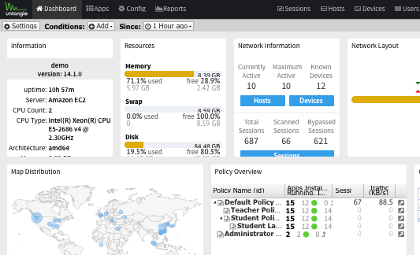

A la hora de crear el servidor web se nos presentaron varias opciones y tras buscar la mas adecuada decidimos instalar Ubuntu server 20.04. En nuestro server hemos realizado una configuración raid 1 para ampliar el espacio de no solo la pagina web, sino que también de el host de archivos (nextcloud), el cual se usará para hacer backups y mandar archivos importantes a los demás integrantes del equipo.

Para el firewall (y portal cautivo) de nuestra red hemos usado untangle, un servicio gratis que cualquiera con correo electrónico puede usar. Nuestro equipo configuro el untangle para crear una subred segura y rápida. También cuenta con un portal cautivo y un server VPN, para el cual creamos una serie de clientes y nos descargamos sus respectivos archivos para utilizarlos con la aplicación móvil y la de escritorio. Para añadirle una capa extra de seguridad también hemos aplicado un bloqueo de macs.
